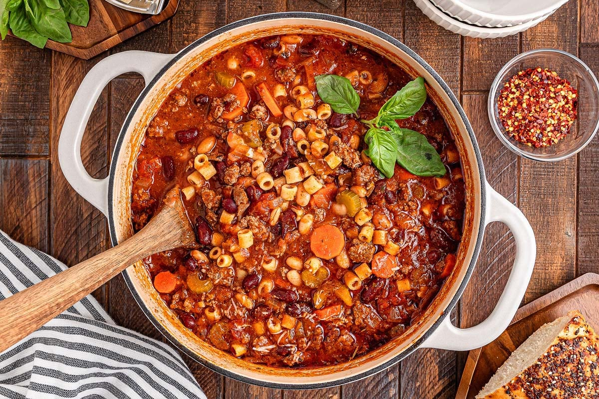

Easy Pasta Fagioli
Home

Cozy, hearty, and full of classic Italian flavor, this pasta fagioli is made with tender cannellini beans and ditalini
pasta in a comforting, savory broth. Finish each bowl with freshly grated Parmesan and serve with crusty bread for an
easy, satisfying meal.
Ingredients
- 1 tablespoon olive oil
- 1 carrot, diced
- 1 stalk celery, diced
- 1 onion, diced
- 1/2 teaspoon chopped garlic
- 4 (8 ounce) cans tomato sauce
- 1 (14 ounce) can chicken broth
- 1 tablespoon dried parsley
- 1/2 tablespoon dried basil leaves
- Freshly ground black pepper to taste
- 1 1/2 cups ditalini pasta
- 1 (15 ounce) can cannellini beans, drained and rinsed
Steps
- Heat olive oil in a saucepan over medium heat. Add carrot, celery,
and onion; cook and stir until soft. Add garlic and sauté briefly.
- Stir in tomato sauce, chicken broth, parsley, basil, and pepper;
simmer for 20 minutes.
- Bring a large pot of lightly salted water to a boil. Add ditalini
pasta and cook for 8 minutes or until al dente; drain.
- Add beans and cooked pasta to soup; simmer until heated through,
1 or 2 minutes.
- Enjoy!